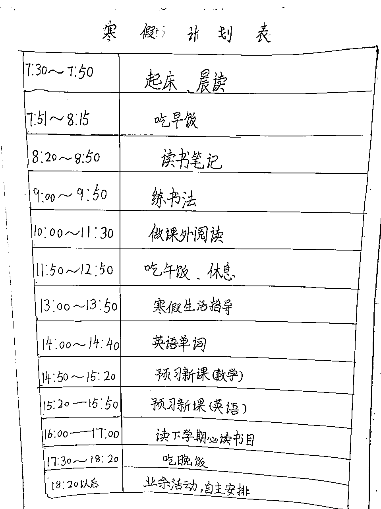
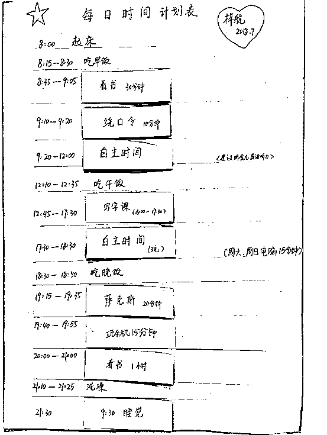
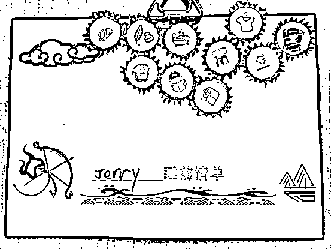
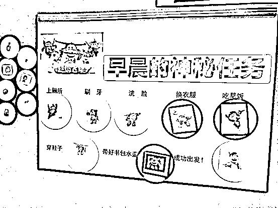
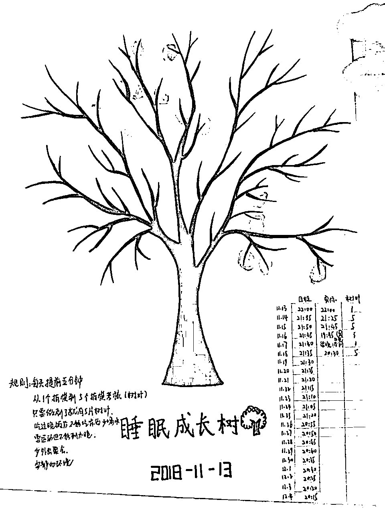
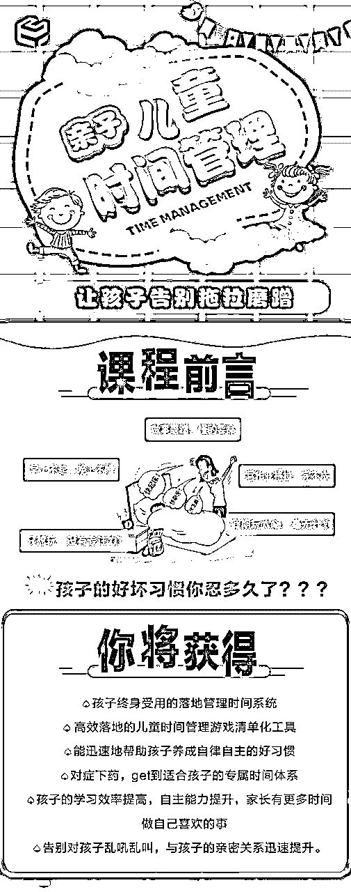
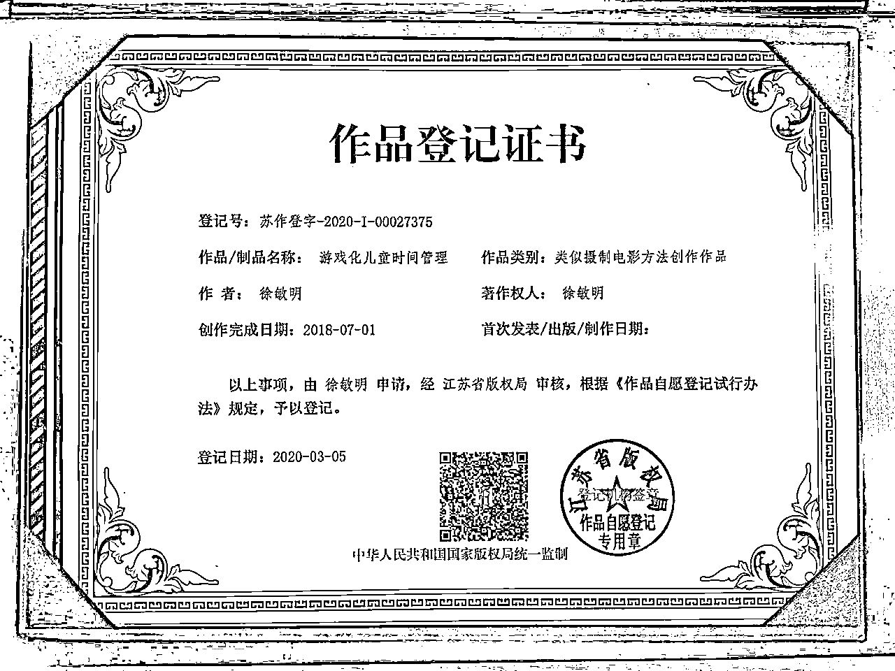
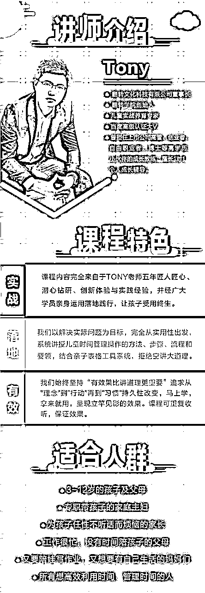
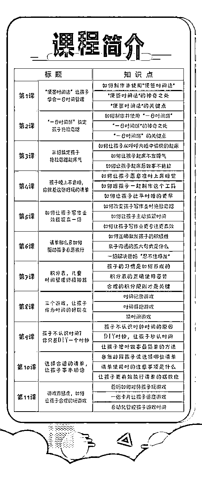

来源：https://kwj3fkh7ymf.feishu.cn/docx/SucvdzswloVe1txIrbDchCZDnvb
（每行为一个红包的红包皮文字，红包可以统一发1元10个包）
各位家长们晚上好
20：30 吉时已到
欢迎大家参加今晚的分享
寒假来啦！
你和孩子准备好了吗？
不怕同桌是学霸
就怕同桌要放假
寒假是特别好的
弯道超车的机会
今天的分享认真听
绝对让你收获满满
红包发到手抽筋，这波红包雨，大家领的还尽兴吗？
没抢到也没关系，我们今晚的分享会一直穿插红包雨，大家不要走开哈！
转眼2022年过完了，不知道你们那里是不是和我们这里一样，因为疫情原因，导致孩子上了很长时间的网课，复课没多久，又进入寒假了。有句话说：“不怕同桌是学霸，就怕同桌要放假。”假期对于很多孩子来说，的确是个分水岭，有的孩子假期疯玩儿，一开学成绩一落千丈，有的孩子利用假期合理规划自己的时间，学也学到了，玩也玩到了，一开学就明显弯道超车了。这里面的区别就在于，孩子会不会安排自己的时间，会不会给自己制定学习计划，循序渐进的进步。
说到制定学习计划，你肯定不陌生，我们自己做学生的时候，肯定也给自己定了不少学习计划，孩子放假，我们也会给孩子制定学习计划，类似这样的：

大家的假期计划
是这样的吗？
这样的假期计划表，看起来很不错，时间安排的井井有条
可是整个假期，孩子都能按照计划表坚持下去吗？
以我的经验，最长也就个把星期，这个计划表就基本失效了。
然后，孩子就开始撒丫子玩儿去了，看电视、玩游戏，不到临近开学的关头不完成作业
一叫孩子写作业，就开始各种拖拉磨蹭......
问题到底出在哪里呢？
是学习计划不合理吗？
还是孩子就是贪玩儿不爱学习？
别着急，我们来看看下面这份学习计划：

看上去好像也没啥特别的，但这张计划表的执行效率可要高多了！
秘密就在不同颜色的标签条呀！
不同的颜色代表不同的涵义，有的是孩子必须要做的事，有的是父母希望孩子做的事，有的是孩子可以自主安排的事。
便签纸的位置可以根据孩子当日的情况自行调整，由孩子自主确定位置。
你看，每天该做的事都做了，孩子还觉得自己不是被逼着做的
时间是自己可以主动掌控的，是不是就更愿意执行了呢？
这就是用巧妙的方法来帮助孩子规划好自己的时间，学习玩耍两不误
有没有现在就去做一张的冲动？
别着急，还有好东西...
假期孩子是不是生物钟都乱七八糟的？晚上半夜不肯睡，早上日上三竿了还不起？
正常的生物钟被打乱，执行学习计划就更困难了
特别是到了临近开学的时候，要调整上学的生物钟，真是太难了......
我能想到的是，父母一遍一遍的催洗澡、催刷牙、催上床关灯
可是孩子呢？就是不去，一会儿玩玩具，一会儿要阅读，一会儿又去衣柜翻衣服，总之，就是不想去睡觉。
好不容易磨磨蹭蹭上了床，第二天早上怎么都不肯起来，眼看半个上午就要磨蹭过去了，孩子还啥正事儿没干呢！
这是很多孩子的假期常态了吧？怎么办呢？我们来看2个神器


把睡前和晨起要做的事情，变成游戏，孩子在边执行游戏的过程中，就完成了该做的事情，全程无痛。
孩子不需要我们的唠叨，讲道理，他们只需要用他们可接受的方式完成要做的事情
那么，孩子就是很晚睡觉，导致第二天白天精神不好，完不成学习任务，怎么办呢？
再来看张图

睡眠成长树，你可以理解为是一种养成类游戏，等一棵光秃秃的树上长满了“叶子”，孩子的早睡习惯也就养成了！
大家觉得有意思吗？
想不想get更多神器？
刚刚给大家看了一些专门帮助孩子建立好习惯，帮助孩子做时间管理的小方法
不知道你看到这里，有没有一种蠢蠢欲动的冲动呢？
反正我第一次接触的时候，是惊艳的不得了。
我想的是，妈呀！这些方法也太好了吧？！
不吼不叫就达到了我想要达到的目的，老母亲血压不用飙升，孩子也能乖巧听话啦？
除了上面这些，还有怎么合理控制孩子看电视、玩游戏，这也是我们家长很头疼的吧？
都有相应的，特别有效的解决办法，你肯定要说，赶紧告诉我呀！
别着急，秘密呀，就藏在这个《亲子儿童时间管理》的课程里

这套课程我学习了几课，就被深深的吸引住了，迫不及待要分享给你。
时间管理对我们大人都是相当重要的课题，如果孩子能从小就接受这方面的教育，对他们将来一生的帮助都是非常大的
这套课程是一套国家版权课程，绝对的实力担当哦！

这套课经过了5年的反复迭代和修订，现在已经非常成熟了，我还扒出来了好多以前的老学员好评，随手发几张来看看哈！大家说好才是真的好~
那现在要隆重介绍一下这套课程的开发者——T教练啦！
（这部分根据自己的情况自由发挥）

反正我觉得这套课程特别适合我，相信也会特别适合你的！
看下课表，我觉的每一课都直戳我的痛点，我打算寒假就和娃一起学起来

有人要和我一起
学习亲子儿童时间管理吗？
这套课程在千聊平台也有售，价格是399元，学习人次已经达到2.7万多次哦！
不过，这次我给咱们群申请了寒假特别福利，大家一起拼团，只要199元，就这3天的特别福利，错过就没有了哦
想和我一起学习《亲子儿童时间管理》的小伙伴，咱们来接个龙哈！
参考话术：
#接龙
告别毫无计划的假期，培养自律的孩子，停止拖拉磨蹭坏习惯，我要带孩子践行儿童时间管理
原价399元，本群特别福利，仅需199元。团满10人再送全套电子版物料包
1.
2.
3.